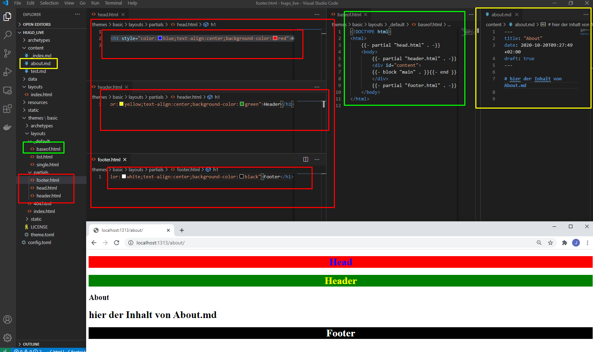
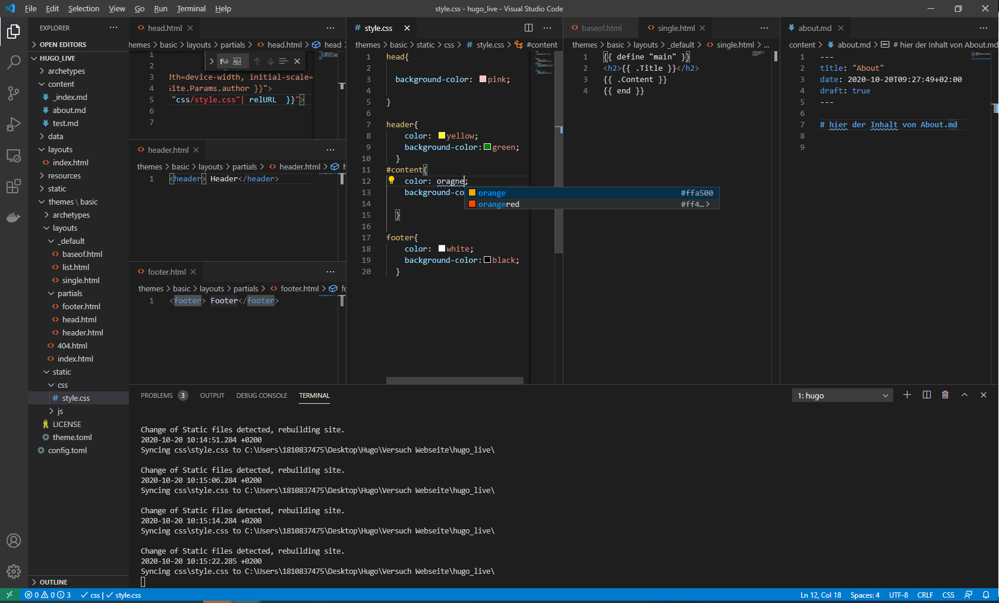
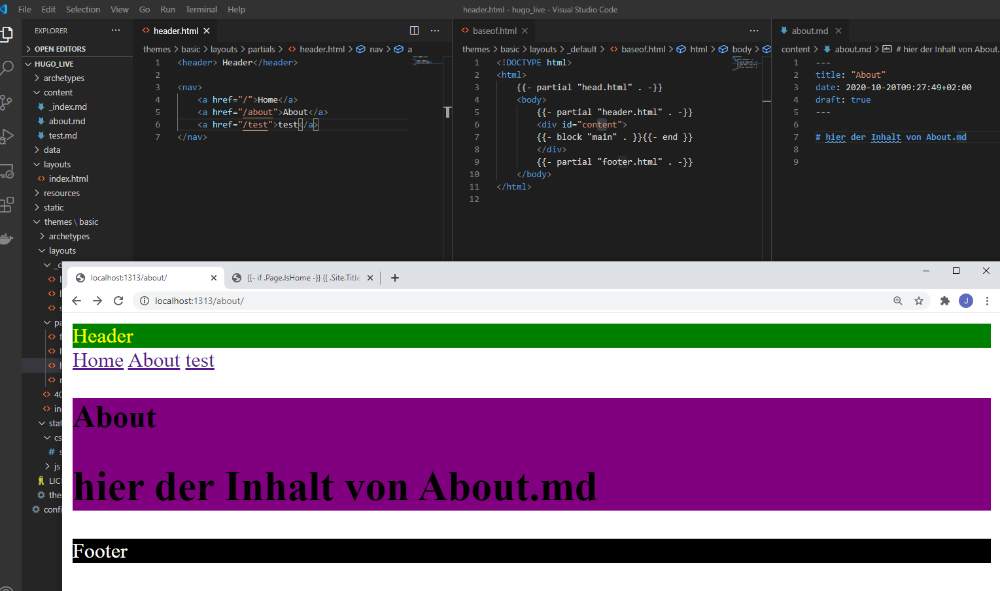
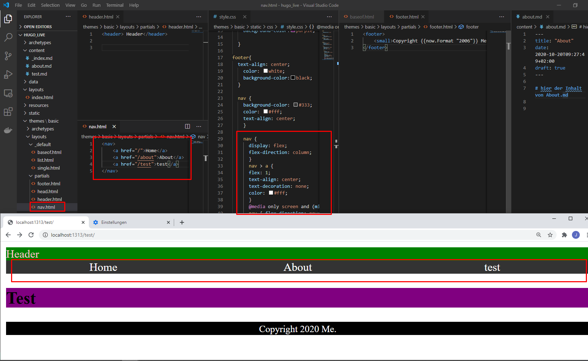

1) mkdir hugo_live 2) hugo new site hugo_live --force 3) cd hugo_live 4) tree 5) tree /f 6) hugo server -D => leere Seite aber keinen Fehler
Erstelle eigenes Theme
- >hugo new theme basic
HInzufügen des Themes in die config.toml
theme = "basic"
Testen ob server läuft => Es sollte kein 404 kommen
Erstelle Website index
touch ./layouts/index.html
mit dem sourcecode folgender HTML Inhalt
touch ./conent/_index.html
mit minimalem MARKDOWN Inhalt
Testen ob server läuft =>nun sollte die Index auf die URL angezeigt werden
default Pages NICHT posts
Erstelle Sub-Pages Website
- Definiere in der themes/basisc/layouts/Single.html
html {{ define "main" }} <h2>{{ .Title }}</h2> {{ .Content }} {{ end }} - Erstelle neue Seiten > hugo new about.html > hugo new test.html
Test ob die Seiten dargestellt werden
Einbinden der partials
Paritals = inhalt de rjeweiligen rubrik baseof = grundsätzliches aussehen single.html = übergang von Markdown zu html
 am oberen Bsp sieht man wie die Partials(Head, Header, Footer) über das Baseof mit dem Contetn die Seite erstellen
Erweiterung mit der CSS 
Erweiterung mit einfacher Menüführung mit Liste 
Auslagern der Nav in eigenes Partial, das muss dann wiederum imBaseof eingebunden werden

formatierung der Nav in css 
Bis hierher haben wir nun eine Statische Navigation via nav.html erreicht. Im weiteren wollen wir eine dynamische Navigation haben. Das beduetet, dass wenn ein neuer Artikel in die Content Serie erstellt wird, wird dieser autoamtisch in die Navigation übertragen. Das ganze ist außerdem unendlich in die Tiefe geschachtelt
- löschen der bisherigen nav.html
- erstelle menu.html
- erstelle menu_recursive.html
- erstelle geschachtelten Content
Erstelle etwas Inhalt mit Struktur
- hugo new Dokumentationen_index.html
hugo new Dokumentationen\Opeating-Systeme_index.html
hugo new Dokumentationen\Opeating-Systeme\Linux_index.html
hugo new Dokumentationen\Opeating-Systeme\Linux\bash.html
hugo new Dokumentationen\Opeating-Systeme\Windows_index.html
- hugo new Dokumentationen\Opeating-Systeme\Windows\cmd.html
hugo new Dokumentationen\Opeating-Systeme\Windows\powershell.html
hugo new Dokumentationen\Opeating-Systeme\MAC_index.html
-
- hugo new Dokumentationen\Programming_index.html
hugo new Dokumentationen\Programming\Python_index.html
hugo new Dokumentationen\Programming\Python_index.html
- hugo new Dokumentationen\Programming\Python\Editoren_IDE_notebooks.html
- hugo new Dokumentationen\Programming\Python\Installation.html
- hugo new Dokumentationen\Programming\Python\Environment.html
- hugo new Dokumentationen\Programming\Python\kompilieren.html
hugo new Dokumentationen\Programming\Python\Datentypen.html
hugo new Projekte\Netzwerkanayse_index.html
- hugo new Projekte\Netzwerkanayse\Datengeneration.html
- hugo new Projekte\Netzwerkanayse\Datenanalyse.html
Bash
hugo new Dokumentationen\_index.html && hugo new Dokumentationen\Opeating-Systeme\_index.html && hugo new Dokumentationen\Opeating-Systeme\Linux\_index.html && hugo new Dokumentationen\Opeating-Systeme\Linux\bash.html && hugo new Dokumentationen\Opeating-Systeme\Windows\_index.html && hugo new Dokumentationen\Opeating-Systeme\Windows\cmd.html && hugo new Dokumentationen\Opeating-Systeme\Windows owershell.html && hugo new Dokumentationen\Opeating-Systeme\MAC\_index.html && && hugo new Dokumentationen rogramming\_index.html && hugo new Dokumentationen rogramming ython\_index.html && hugo new Dokumentationen rogramming ython\_index.html && hugo new Dokumentationen rogramming ython\Editoren_IDE_notebooks.html && hugo new Dokumentationen rogramming ython\Installation.html && hugo new Dokumentationen rogramming ython\Environment.html && hugo new Dokumentationen rogramming ython\kompilieren.html && hugo new Dokumentationen rogramming ython\Datentypen.html && hugo new Projekte\Netzwerkanayse\_index.html && hugo new Projekte\Netzwerkanayse\Datengeneration.html && hugo new Projekte\Netzwerkanayse\Datenanalyse.html
Powershell
rmdir -r .\content\; mkdir content; hugo new Dokumentationen\_index.md; hugo new Dokumentationen\Opeating-Systeme\_index.md; hugo new Dokumentationen\Opeating-Systeme\Linux\_index.md; hugo new Dokumentationen\Opeating-Systeme\Linux\bash.md; hugo new Dokumentationen\Opeating-Systeme\Windows\_index.md; hugo new Dokumentationen\Opeating-Systeme\Windows\cmd.md; hugo new Dokumentationen\Opeating-Systeme\Windows\powershell.md; hugo new Dokumentationen\Opeating-Systeme\MAC\_index.md; ; hugo new Dokumentationen\Programming\_index.md; hugo new Dokumentationen\Programming\Python\_index.md; hugo new Dokumentationen\Programming\Python\_index.md; hugo new Dokumentationen\Programming\Python\Editoren_IDE_notebooks.md; hugo new Dokumentationen\Programming\Python\Installation.md; hugo new Dokumentationen\Programming\Python\Environment.md; hugo new Dokumentationen\Programming\Python\kompilieren.md; hugo new Dokumentationen\Programming\Python\Datentypen.md; hugo new Projekte\Netzwerkanayse\_index.md; hugo new Projekte\Netzwerkanayse\Datengeneration.md; hugo new Projekte\Netzwerkanayse\Datenanalyse.md

Danach sieht die Navigation wiefolgt aus

Diese verschachtelte Navigation kann nun problemlos in css zu einem MerhschichtigenLayout konfiguriert werden:
Verschachtelte Navigation css
touch static/styleMenu.css Füge menü css in der baseof ein

Ab nun wird das Menü dynamisch nach dem Anlegen der Markdowns in der ordner sruktur erstellt. Sprich werden neue strukturen wie
hugo new Impressum\Adresse.html hugo new Impressum\Telefon.html
So werden diese Informationen 1:1 in die Navigaion übernommen
Erstelle neue Inhatl
Pages bzw Posts
hugo new posts/_index.html